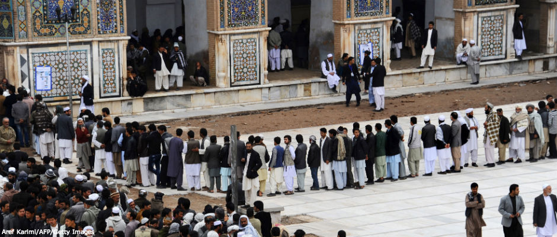

نویسنده: حمیرا ثاقب
آنچه در انتخابات افغانستان گذشت
برای بسیاری از مردم افغانستان انتخابات ریاست جمهوری از اهمیت فوق العاده ای برخوردار است، آنها میدانند که شانس حامد کرزی برای انتخابات مجدد در ریاست جمهوری ناممکن است و چشم بر راه آمدن فرد دیگری هستند. در مرحلۀ ابتدایی ثبت نام انتخابات ریاست جمهوری ۲۷ کاندید خود را برای کارزار انتخاباتی آماده نموده بودند؛ در میان آنها چهرههای جدید نیز به چشم میخورد، در این میان تنها زن کاندید برای انتخابات ریاست جمهوری خدیجه غزنوی بود که تصمیم داشت تا در این رقابت ها اشتراک نماید، اما پس از سپری شدن مدت زمانی از میان این بیست و هفت تن تنها یازده تن از سوی کمیسیون مستقل انتخابات ریاست جمهوری واجد شرایط دانسته شدند و دیگران از این گود رقابت حذف شدند. طبعا قیودات و سختگیریهای بیشتری بر کاندیدان این دوره وضع گردیده بود و همین موضوع سبب گردید که بسیاری از کاندیدان نتوانند شروط لازم برای رییس جمهور شدن را دارا باشند و به دلایل مختلف از ادامه کارشان بازماندند.
نامزدها که بودند؟
داکتر عبدالله عبدالله، اشرف غنی احمد زی، زلمی رسول، عبدالرب رسول سیاف، قیوم کرزی، گل آغا شیرزی، عبدالرحیم وردک، قطب االدین هلال، داوود سلطان وزی، هدایت امین ارسلا و نادر نعیم از جمله افرادی بودند که به رقابت در کسب آراء بیشتر پرداختند.
طبیعتا ساختار تیمی این افراد بر مبنای هویت های قومی و نژادی استوار بوده است و کوشش گردیده تا اکثریت کاندیدان در تیم کاری خویش؛ اقوام مختلف افغانستان را در خود جای دهد و به نوعی آراء این قومیت ها را بدست آورند.
مهمترین کاندیدانی که بیشتر از دیگران به کمپاین های گسترده و بزرگ میپرداختند داکتر عبدالله، اشرف غنی احمد زی، زلمی رسول و عبدالرب رسول سیاف بودند اما دیگران کوشش نمودند تا برنامه های خود را در اجتماعات مختلف برگزار کنند.
قطب الدین هلال که نمایندۀ حزب اسلامی بود در نزد افکار عمومی مردم از جایگاه کمتری برخوردار بوده است و نهادهای جامعه مدنی و فعالان حقوق زن از برخی نظریات جنسیتی وی در مورد زنان آزرده خاطر به نظر میرسیدند. هدایت امین ارسلا نیز از جمله افرادی بود که سالها در بدنۀ حکومت آقای کرزی نقش آرام و بی سر و صدایی داشت و با تیم کاری اش در رقابت ها خوش ندرخشیدند و تا آخر رقابت ها حضور مبارزاتی شان بسیار ضعیف ارزیابی شده است.
داوود سلطان زوی نیز از جمله کاندیدانی بود که در گذشته وکیل پارلمان افغانستان بوده ، او طرحهای دقیق و مهمی برای افغانستان داشت و حتی در میان معاونین خود یکتن را نیز از میان زنان برگزید و شعار حمایت از زنان را در سرلوحۀ مبارزاتی خویش قرار داد. عبدالرحیم وردک نیز از جمله کاندیدانی بود که تا آخرین لحظات کمپاین انتخاباتی، بسیار سرد حضور یافت و درآخرین روزهای کمپاینهای انتخاباتی با تدویرکنفرانس مطبوعاتی کناره گیری خویش را بدون دلیل مشخصی از کاندیداتوری انتخابات ریاست جمهوری اعلان نمود.
شاید بتوان گفت که گمانه زنی ها بر روی چند چهرۀ مشخص بیشتر متمرکز بود. بسیاری از افراد در فضای مجازی به این موضوع می پرداختند که قیوم کرزی برادر بزرگتر (حامد کرزی رییس جمهور )کشور از شانس بیشتری در پیروزی برخوردار خواهد بود اما قیوم کرزی در مناظرات تلویزیونی بسیار ضعیف ظاهرشد و به درستی نمی توانست قناعت انبوهی از سوالهای افغانها را در موارد گوناگون حاصل کند تا اینکه وی در یک اقدام کاملا سنجیده شده از سوی حامد کرزی به نفع زلمی رسول کنار رفت.
زلمی رسول را میتوان یکی از چهره های کلیدی مورد نظر حاکمیت دانست. حامد کرزی در سفری که به روسیه داشت ، زلمی رسول را شایستۀ پُست ریاست جمهوری دانسته و وعدۀ حمایت از وی را اعلام نمود. آقای رسول زمانی رییس شورای امنیت ریاست جمهوری و سپس وزیر امورخارجۀ افغانستان بود. گرایش سیاسی وی عمدتا به سوی محمد ظاهر؛ پادشاه اسبق افغانستان بود و دارای پیشینه ای با تفکر دموکراتیک است. وی در معادلات سیاسی کوشید تا احمدضیاء مسعود برادر احمد شاه مسعود فرماندۀ بزرگ مجاهدین را بعنوان معاون اول خویش و حبیبه سرابی والی سابق ولایت بامیان را به حیث معاون دوم خویش برگزیند.
اشرف غنی احمدزی یکی دیگر از کاندیدان نیرومند این انتخابات است که هواداران زیادی را در کنار خود داشته است. اشرف غنی احمدزی در گذشته همراه با زلمی خلیل زاد در لابی گری های سیاسی مصروف بوده است و نقش برجستهای در ایجاد حکومت جدید آقای کرزی داشته است. او در ابتدای حکومت کرزی وزیر مالیۀ افغانستان بود و توانست حضور توانمندی در دستگاه اقتصادی و مالی کشور داشته باشد. آقای غنی در چند سال گذشته ریاست انتقال مسوولیت های امنیتی از نیروهای خارجی به نیروهای افغان را عهده دار بوده است، وی در انتخابات دورۀ گذشته نیز اشتراک نمود اما موفقیتی را در رقابت با حامد کرزی بدست نیاورد؛ او اینبار مصممتر از قبل در آرایش سیاسی تیم کاری خود تغییرات محسوسی را بوجود آورد و عبدالرشید دوستم فرماندۀ ازبک تبار را بعنوان معاون اول و سرور دانش وزیر عدلیۀ پیشین افغانستان و از افراد نزدیک به کریم خلیلی را بعنوان معاون دوم ریاست جمهوری انتخاب نمود.
آقای اشرف غنی احمدزی در تمامی مناظرات تلویزیونی حضور مییافت و طرح خویش را مبنی بر حکومت داری خوب بیان میداشت؛ آقای غنی در بُعد اقتصادی توضیحات علمی و کاربردی ارائه می نمود و طبعا هواداران زیادی را از آن خویش نمود.
داکتر عبدالله عبدالله از دیگر کاندیدان انتخابات ریاست جمهوری افغانستان است که بیشترین هواداران را در کنار خود دارد. آقای عبدالله از همراهان نزدیک احمدشاه مسعود بوده است و در زمان سفر احمدشاه مسعود به پاریس او را همراهی نموده است، او پس از سقوط طالبان به عنوان وزیر امور خارجه ایفای وظیفه نموده است و پس از آن در انتخابات ریاست جمهوری گذشته یکی از رقبای جدی آقای کرزی بوده است. پس از پیروزی حامد کرزی در انتخابات ریاست جمهوری داکتر عبدالله بعنوان اپوزیسیون همواره سیاست های حکومت آقای کرزی را نقد میکرد و در همین دوره بود که او خود را برای یک رقابت سخت در آینده برای ریاست جمهوری آماده میساخت.
انجینیر خان محمد از سوی حزب اسلامی به عنوان معاون اول وی و محمد محقق بعنوان معاون دوم داکتر عبدالله آمادۀ پیکارهای جدی انتخاباتی گردیدند.
دور دوم انتخابات
شاید بتوان گفت انتخابات این دورۀ ریاست جمهوری افغانستان یکی از حساسترین انتخابات باشد و همزمانی خروج نیروهای خارجی از افغانستان، سناریوی سال ۲۰۱۴ و عدم امضای پیمان امنیتی میان افغانستان و امریکا از سوی آقای کرزی بر شدت نگرانی مردم افزوده است و آنها هیچگونه تمایلی ندارند تا افغانستان دوباره به دهه هفتاد شمسی و وقوع جنگ های داخلی برگردد.
بنابراین حضور گستردۀ مردم افغانستان سبب گردید تا این ذهنیت بوجود آید که ملت افغانستان نسبت به آیندۀ سیاسی خود بی تفاوت نیستند و آنان میتوانند با رای خود سرنوشت خویش را تعیین کنند.
در نتایج ابتدایی آراء داکتر عبدالله بیشترین رای را کسب نموده است و اشرف غنی احمد زی در مقام دوم این آراء قرار دارد و همچنین زلمی رسول مقام سوم را کسب نموده است؛ در این فاصله آرایش سیاسی تیم داکتر عبدالله ارتقاء نمود و زلمی رسول همراه با گل آغا شیرزی دو کاندید مطرح انتخابات به داکتر عبدالله پیوستند و عملا جبهۀ آقای عبدالله قدرتمندتر از قبل گردید.
اکنون و با توجه به شرایط جدید در افغانستان آقای اشرف غنی احمدزی معتقد است که انتخابات باید به دور دوم برود و ادعا نمودند که ما در دور دوم انتخابات برندۀ این کارزار هستیم و از سویی دیگر هواداران داکتر عبدالله نیز با شعف و خوشحالی فراوان خود را برندۀ هر دو دوره دانسته و حتی حضور در دور دوم انتخابات را استقبال نمودند.
با اینحال زمزمه هایی به گوش میرسد که گویا در عقب پردۀ سیاست جریاناتی در تلاش هستند تا به نوعی حکومت آینده را در یک ائتلاف سازماندهی شده قرار دهند و به عبارت بهتر تمامی حریفان سیاسی جایگاه خویش را در حکومت آینده پیدا کنند.
در نتیجه میتوان گفت که هر دو کاندید پیشتاز تلاش وافر دارند تا به مسند قدرت نزدیک شوند و با یارگیری های سیاسی خود را به عنوان رییس جمهور جدید افغانستان تثبیت نمایند. از طرف دیگر کشورهای مختلف جهان نیز مطالعات خویش را از شرایط موجود در افغانستان دارند و طبیعتا حمایت های آشکار و نهان خود را از این دو کاندید خواهند داشت.
انتخابات سال ۱۳۹۳ نشان داد که افغانها برای حضور در پای صندوق های رای جدی هستند و عزم شان برای تعیین سرنوشت سیاسی قوی و محکم تر از دوره های گذشته شده است. این موضوع سبب گردیده تا انتخابات ریاست جمهوری حساس تر و بحث برانگیزتر باشد.